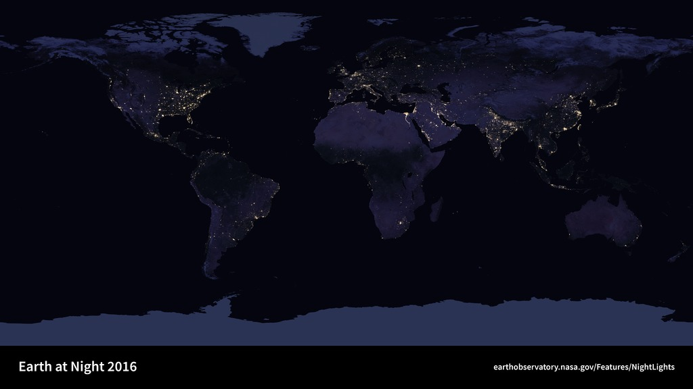

Internet sembra non avere un luogo. Un messaggio parte, una pagina compare, una videoconferenza si apre. Dietro questa apparente immediatezza ci sono invece cavi, apparati, centrali, energia, permessi e manutenzione. La rete raggiunge bene i luoghi dove molte persone possono condividere il costo dell’infrastruttura; raggiunge con più fatica una casa isolata, una nave, un territorio montuoso o una comunità lontana dalle grandi dorsali. Starlink nasce dentro questa disuguaglianza geografica. Non perché sulla Terra non si sappia costruire una buona connessione, ma perché costruirla dappertutto con gli stessi mezzi non ha lo stesso costo.
Il chilometro che cambia il conto
Una rete in fibra ha un vantaggio enorme: una volta posata, può trasportare molto traffico, con ottime prestazioni e aggiornamenti degli apparati alle estremità. Il tratto fino all’ultima abitazione, però, può richiedere scavi, attraversamenti, autorizzazioni e interventi per pochissimi clienti. La distanza non è soltanto una misura fisica; diventa una misura economica. Se quel tratto serve un palazzo, il costo si distribuisce. Se serve un’abitazione a molti chilometri dalla successiva, il conto cambia.
Il satellite sposta parte dell’infrastruttura sopra il territorio. Non elimina il lavoro necessario a collegare una persona: occorrono ancora un terminale, alimentazione, assistenza, accesso commerciale e una rete terrestre alla quale consegnare i dati. Cambia però il modo di superare la distanza. Una zona può essere raggiunta senza portare un cavo nuovo fino a ogni edificio. Questo è il nucleo utile dell’idea, prima dei grandi numeri e prima delle fotografie dei treni di satelliti.

La distanza nello spazio conta ancora
I collegamenti satellitari esistevano molto prima di Starlink. Molti utilizzavano satelliti geostazionari, che ruotano con la Terra e appaiono quasi fermi nel cielo dell’utente. La loro quota, circa 35.786 chilometri sopra l’equatore, permette a un singolo veicolo di vedere una grande porzione del pianeta e semplifica l’inseguimento da terra. Il prezzo è la lunghezza del percorso radio. Il segnale non può andare più veloce della luce: nessun software può cancellare quel limite.
Per una risposta che viaggia dall’utente al satellite, scende a una stazione, torna al satellite e ridiscende all’utente, un modello verticale ideale contiene quattro volte la quota. A quella geostazionaria il solo percorso richiede quasi mezzo secondo. Il collegamento reale è obliquo e contiene altri tratti, code e apparati. È una delle ragioni per cui latenza e velocità di scaricamento non sono la stessa cosa. Si può ricevere un grande file con un flusso sostenuto e continuare a sentire un ritardo fastidioso nella conversazione.
La distanza e il limite della luce
Modello originale: t = 4h/c, con c = 299.792,458 km/s. Percorso verticale utente-satellite-gateway-satellite-utente, senza laser, code o rete terrestre. Non è una previsione della latenza Starlink reale. Senza JavaScript resta l’esempio a 550 km.
Abbassare il satellite significa moltiplicarlo
Avvicinare i satelliti riduce quel tratto, ma un veicolo basso vede meno territorio e passa rapidamente sopra l’utente. Per dare continuità al servizio servono molti satelliti distribuiti su orbite diverse, una successione ordinata di collegamenti e terminali capaci di cambiare interlocutore. Si scambia parte della semplicità geostazionaria con una complessità di rete assai maggiore. La costellazione non è un’invenzione che annulla i vincoli: sceglie quali vincoli affrontare.
Starlink non deve quindi essere giudicata soltanto con la domanda se sia più veloce della fibra. In un quartiere già ben cablato il satellite può non essere la soluzione migliore. In mare, su un aereo o in un luogo dove il cavo non arriva, il paragone utile è diverso. Conta quale servizio era disponibile prima, a quale costo, con quale continuità e con quali limitazioni. Lo stesso prodotto può essere superfluo per una persona e cambiare concretamente la giornata di un’altra.
Questo non autorizza a dichiarare risolto il divario digitale. Chi non può pagare il terminale, mantenere un’alimentazione stabile o usare il servizio nel proprio Paese resta escluso anche sotto un cielo pieno di satelliti. La copertura fisica è una condizione necessaria, non una politica sociale completa. Il valore di Starlink si comprende meglio riconoscendone l’utilità specifica, senza chiederle di sostituire ogni altra infrastruttura.
Fonti pubbliche e tracce
- SpaceX, testimonianza di Patricia Cooper al Senato, 3 maggio 2017. Progetto iniziale, necessità di connettività e ruolo del riutilizzo; non descrive la rete del 2026.
- Starlink, tecnologia del sistema. Panoramica ufficiale; alcuni conteggi e quote riassuntive possono aggiornarsi con ritardo.
- Starlink, Improving Starlink’s Latency. Marzo 2024: propagazione, rete terrestre, code e misure percentile. Obiettivi distinti dalle prestazioni garantite.
- NASA, Black Marble 2016. Composito delle luci notturne: non è una mappa della connettività Internet.